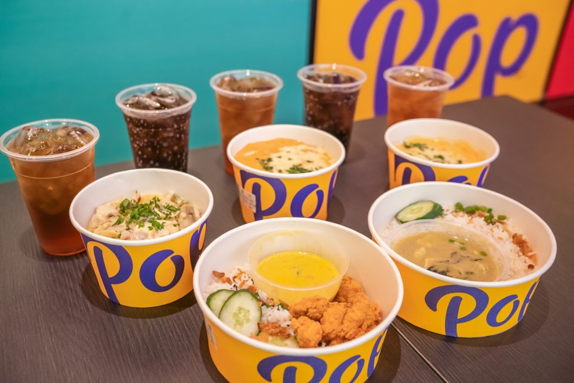

My internship experience with Dahmakan aka Pop Meals has taught me many things that I will share here. Throughout my internship period I was tasked with responsibilities from two departments.

Operations Team (Main department):
In summary, my role in the operations department requires me to aid in the improvement of productivity and efficiency within the production line at the central kitchen and also the outlets spread across Klang Valley.
- Extract data for predictive and visual analysis using SQL queries on Metabase
- Built SQL queries that can be used by operations team for daily reports on prior performances
- Lead and lag time analysis for individual hubs to find pain points and seek improvement
- Conducted research analysis on salaries for staffs around Malaysia to generate a retention analysis report
- Assisted in debugging errors that arise within prior SQL queries
- Implemented automated Google Suites sheets, Excel and basic Javascripts to aid process tracking around Central kitchen along with day to day operations at cloud kitchens and outlets
- Implemented an automated payroll and attendance sheets for department managers to generate payslips for part time crew using advanced Google sheet functions
- Assisted in preparing a Production Dashboards which is used for predicting daily production and procurement volumes while also tracking SKU in the central kitchen
- Implemented basic google scripts (Javascript) for automation such as sending out emails on a daily basis automatically
- Assisted in creating Google sheets assessments for future operations analyst candidates in the company
- Aided in building a Sales trend dashboard to help plan upcoming production plans for the central kitchen team
- Implemented automated Kanban sheets that will be used by dispensing team on a day to day basis for production
- Assisted in operations and implementing lean thinking and various lean philosophies (Kanban, Kaizen, VSM, JIT, 5S, FIFO) within the Central Kitchen. This is aimed to increase product efficiency by reducing waste and emphasize on value added time.
- Assisted in organizing warehouse database and inbound sector at the central kitchen with a FIFO philosophy in preparation for HALAL and HACCP audit
- Interviewed and assisted in forming a team to implement the new FIFO and 5S system as a regular practice in the warehouse
- Consulted team leads within the production phases and assisted in creating Value Stream Maps for processes that run within the central kitchen, while eliminating waste and reducing cycle time
- Conducted motion flow analysis in the central kitchen for each department with the goal to eliminate waste of motion
- Assisted in implementing a Kanban system within the central kitchen in order to minimize errors ,increase efficiency and accountability
- Assisted in training the 5S mentality within central kitchen staff with various training exercises and presentations
- Assisted inbound and warehouse team by implementing standards of procedures to ensure smooth and efficient process flow


Logistics Team:
This role in the logistics department requires me to understand how the meals are delivered from the central kitchen to outlets and then how it is then delivered to the customers. Through data analysis and implementation of logistical solutions such as the plastic box, I am able to aid in reducing previous logistical pain points.
- Understanding operations within outlets and logistics sector by working in and out through departments, while also mapping process flows of each sector
- Logistical solution (Customized PP-Corrugated Boxes) development, data collection and implementation:
- Conducted investigation through data collection and predictive data analysis on meal temperatures throughout the logistic process in order to design a logistic solution for moving the meals efficiently and effectively
- Worked with suppliers to create cardboard and plastic containers as a logistical solution with things such as obtaining quotes, R&D with CAD designs, sample testing, negotiating and implementation
- Used data collected to develop an outlet usability plan along with a logistic plan that will be utilized to make the logistic process more efficient
- Aided in the analysis of last mile deliveries and utilized SQL to obtain raw data from day to day operations in order to improve efficiency and cost effectiveness in the future
- Facilitated the delivery of remaining equipment and machinery from the company Bangkok branch back to the Kuala Lumpur branch
- Worked with logistic and shipping companies along with the procurement team in order to obtain quotations for the delivery of the equipments from Bangkok to Kuala Lumpur